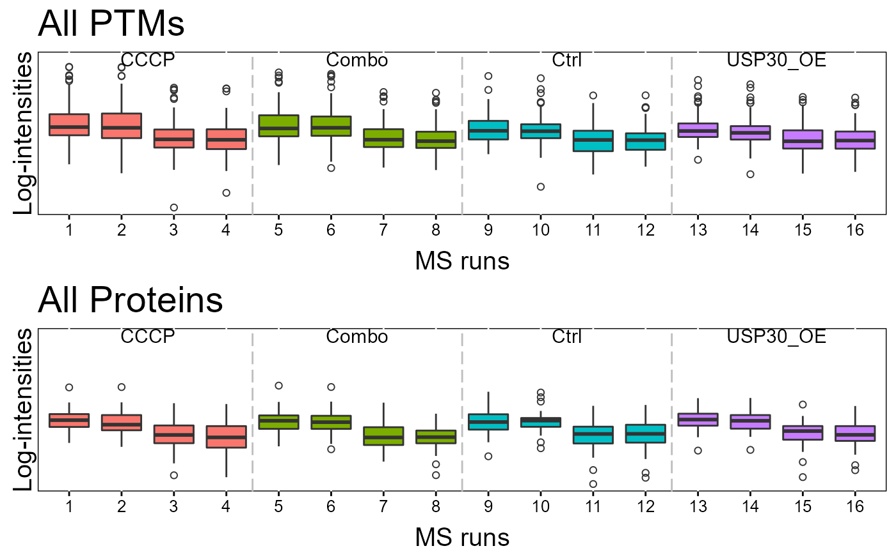
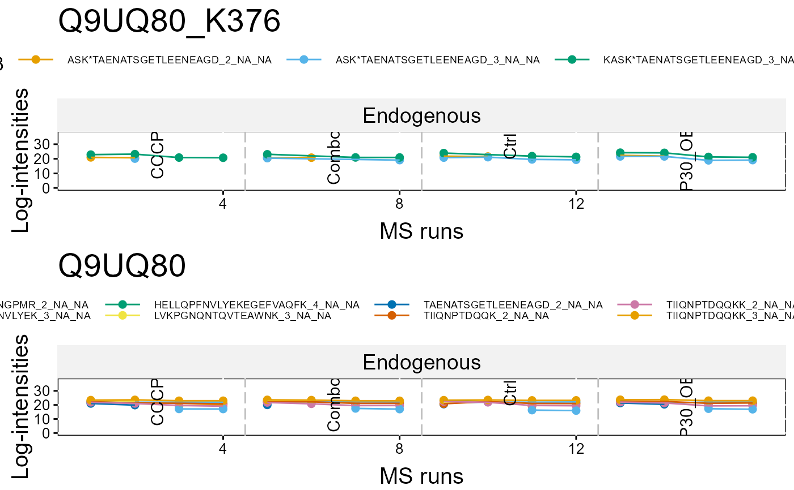
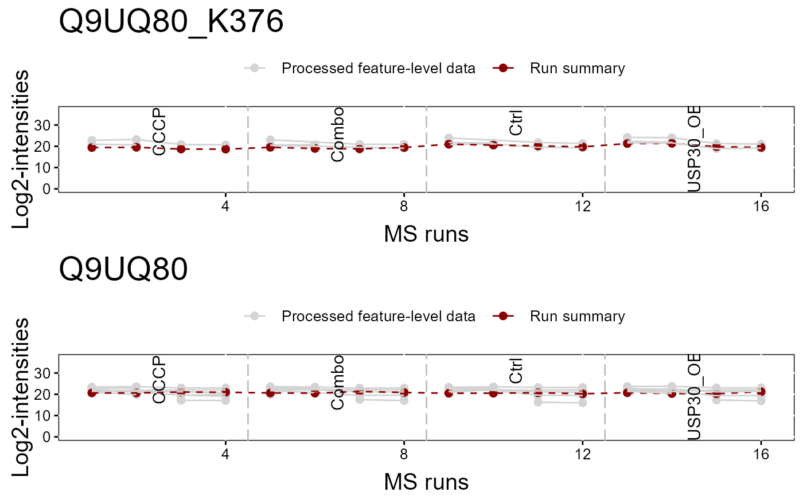

To illustrate the quantitative data and quality control of MS runs, dataProcessPlotsPTM takes the quantitative data from dataSummarizationPTM or dataSummarizationPTM_TMT to plot the following : (1) profile plot (specify "ProfilePlot" in option type), to identify the potential sources of variation for each protein; (2) quality control plot (specify "QCPlot" in option type), to evaluate the systematic bias between MS runs.
dataProcessPlotsPTM( data, type = "PROFILEPLOT", ylimUp = FALSE, ylimDown = FALSE, x.axis.size = 10, y.axis.size = 10, text.size = 4, text.angle = 90, legend.size = 7, dot.size.profile = 2, ncol.guide = 5, width = 10, height = 12, ptm.title = "All PTMs", protein.title = "All Proteins", which.PTM = "all", which.Protein = NULL, originalPlot = TRUE, summaryPlot = TRUE, address = "" )
| data | name of the list with PTM and (optionally) Protein data, which
can be the output of the MSstatsPTM
|
|---|---|
| type | choice of visualization. "ProfilePlot" represents profile plot of log intensities across MS runs. "QCPlot" represents box plots of log intensities across channels and MS runs. |
| ylimUp | upper limit for y-axis in the log scale. FALSE(Default) for Profile Plot and QC Plot uses the upper limit as rounded off maximum of log2(intensities) after normalization + 3.. |
| ylimDown | lower limit for y-axis in the log scale. FALSE(Default) for Profile Plot and QC Plot uses 0.. |
| x.axis.size | size of x-axis labeling for "Run" and "channel in Profile Plot and QC Plot. |
| y.axis.size | size of y-axis labels. Default is 10. |
| text.size | size of labels represented each condition at the top of Profile plot and QC plot. Default is 4. |
| text.angle | angle of labels represented each condition at the top of Profile plot and QC plot. Default is 0. |
| legend.size | size of legend above Profile plot. Default is 7. |
| dot.size.profile | size of dots in Profile plot. Default is 2. |
| ncol.guide | number of columns for legends at the top of plot. Default is 5. |
| width | width of the saved pdf file. Default is 10. |
| height | height of the saved pdf file. Default is 10. |
| ptm.title | title of overall PTM QC plot |
| protein.title | title of overall Protein QC plot |
| which.PTM | PTM list to draw plots. List can be names of PTMs or order numbers of PTMs. Default is "all", which generates all plots for each protein. For QC plot, "allonly" will generate one QC plot with all proteins. |
| which.Protein | List of proteins to plot. Will plot all PTMs associated with listed Proteins. Default is NULL which will default to which.PTM. |
| originalPlot | TRUE(default) draws original profile plots, without normalization. |
| summaryPlot | TRUE(default) draws profile plots with protein summarization for each channel and MS run. |
| address | the name of folder that will store the results. Default folder is the current working directory. The other assigned folder has to be existed under the current working directory. An output pdf file is automatically created with the default name of "ProfilePlot.pdf" or "QCplot.pdf". The command address can help to specify where to store the file as well as how to modify the beginning of the file name. If address=FALSE, plot will be not saved as pdf file but showed in window. |
plot or pdf
# QCPlot dataProcessPlotsPTM(summary.data, type = 'QCPLOT', which.PTM = "allonly", address = FALSE)#>#ProfilePlot dataProcessPlotsPTM(summary.data, type = 'PROFILEPLOT', which.PTM = "Q9UQ80_K376", address = FALSE)#> Warning: Ignoring unknown aesthetics: linetype#> Warning: Ignoring unknown aesthetics: linetype#>#> Warning: Ignoring unknown aesthetics: linetype#> Warning: Ignoring unknown aesthetics: linetype#>